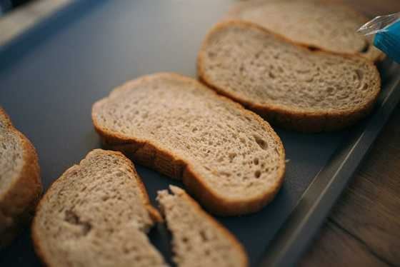
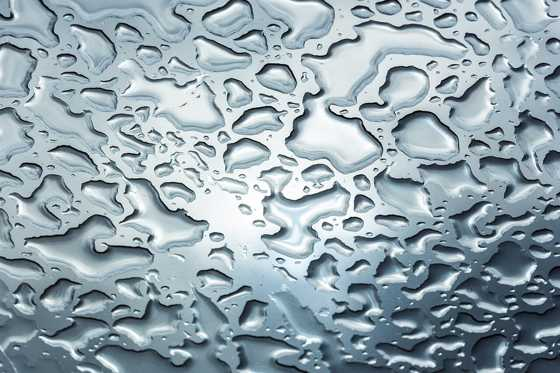
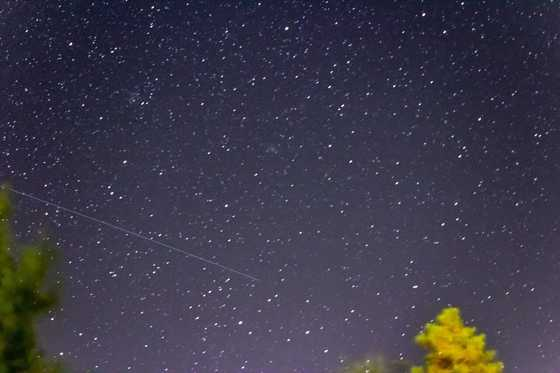
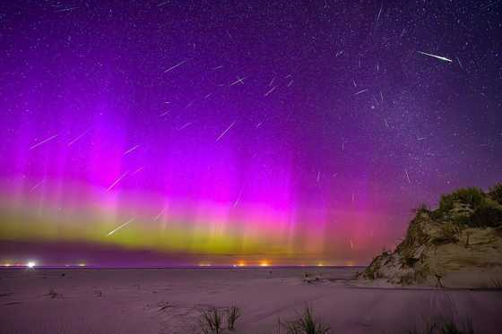

ABOUT
酵母の時間に、あわせて焼く
店主は、酵母の声を聞きながら、時間をかけてパンを作っています。使うのは国産小麦。生地が育つのを急がずに待つ、そのゆっくりした時間が、このお店のパンの土台です。
白い建物のまわりには緑の木々があり、春には黄色いミモザが咲きます。店内には店主のお気に入りのアンティーク雑貨やファブリックが並び、パンを包むマスキングテープの色を選ぶのも店主の楽しみだそうです。
※取材記事(愛媛こまち)で確認できた内容です。




NAME
屋号について

「雨ときどき月」という屋号の由来は、確認できていません。
制作側のイメージとして、しっとりした雨の日と、雲が切れて月がのぞく夜の静かな空気を思い浮かべました。このページの色づかいや写真は、そのイメージと、取材記事にある「ゆっくり時間をかける」「アンティークの雑貨」といった特徴から選んだもので、お店の公式な考えではありません。




BREAD
並ぶパン
国産小麦のパンが、1日に11種類ほど並ぶと紹介されています(取材記事の掲載時点)。
- ドライりんご＆クリームチーズのエピ
- ベーコンエピ
- クランベリーチーズ
- 黒糖メイプルナッツのミニ食パン
上記は取材記事で紹介された例で、品ぞろえは日によって変わる可能性があります。価格・最新のメニュー: 準備中


VOICE
口コミ(イメージ例)
以下は制作側が作成したイメージ例で、実在のお客様の声ではありません。
イメージ例
夕方に立ち寄って、パンを選びました。包みのテープの色まで楽しくて、帰り道が少し明るくなりました。
イメージ例
アンティークの雑貨に囲まれた小さな空間で、ゆっくり棚を眺める時間が好きです。粉の香りがするパンでした。
イメージ例
白い建物と木々の緑が印象的でした。お目当てのパンがあるなら、早めに行くのがよさそうです。
ACCESS
アクセス
| 住所 | 日本、〒793-0041 愛媛県西条市神拝甲甲２０１−１０ |
|---|---|
| 電話 | 準備中 |
| 営業時間 | 準備中(情報源により曜日の記載が異なるため、最新情報はInstagramをご確認ください) |
| 定休日 | 準備中 |
| @ametokidokituki |